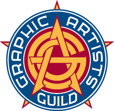

A Few Resources For Freelance
For those of you that are considering going into freelancing, here are some resources you may find useful. I will go more into extra resources when we get closer to the end of the semester.
Graphic Artists Guild
The Graphics Artists Guild (GAG) enables graphic artists and other design professionals to build and maintain successful careers by providing skills and support—from advice on the daily tasks of running a creative business to going to bat for our creative community with business and government leaders. By joining the guild, you gain access to contacts that can both lead to jobs and lead to other artists that can help you on projects. They will also help you with any legal issues you face in the line of duty. GAG also offers free resources too which are listed on their Tools & Resources page. These resources include explaining copyright, trademarks, and codes of fair practice. It also explains how to put together a contract, proposals, and a letter of agreement for jobs.
Graphic Artists Guild Handbook: Pricing & Ethical Guidelines is a book they put out every year. If you don't want to pay the dues to become a member, this book can be an invaluable resource. It helps you figure out how to run your own business (because that's what freelancing is, running your own business) by showing you how to charge and collect a payment, by showing how to protect yourself, how to document your work, etc.
To explore their resources, you can click the Resources tab on the Graphic Artist Guild Websites for Webinars or Graphic Art Guild Website for Education .
American Institute of Graphic Arts
The American Institute of Graphic Arts (AIGA) is much larger and older than GAG but they offer similar services. They advocate for designers, help connect you with clients, provide training opportunities, help promote you, and even provide insurance for you. Like GAG though, they also offer a ton of free resources found on their Resources page . These resources include things like ethical guidelines, career guides, case studies, etc. They even have a section dedicated to students on their Student Resources page .
Design Business and Ethics
This documentation offers practical and specific directions for approaching design issues. It will help you protect yourself in the field and help you avoid making serious mistakes. I highly recommend that you review the document. It goes over how to put together a design brief, how to budget and manage a project, standards of practice, etc. Trust me, you don't know what you don't know.
AIGA Standard Form of Agreement for Design Services
This page goes over your client's responsibilities, your responsibilities, the fees, authorship, and publicity related to projects. Give the AIGA Standard Form Agreement page a read.
Both the Design Business and Ethics and the AIGA Standard Form of Agreement for Design Services documents can be found on the Business Freelance Resources page.
To explore everything AIGA has to offer, go to AIGA's website .
Useful Sites
Fiverr
This is a great resource for freelancers who haven't built up a steady client book yet. You simply create a listing with your services and pricing and if someone wants to hire you for a project they just select your listing.
GitHub
GitHub can be a really good resource for hosting your work and connecting with other developers but they do have a careers sections as well. They are a big company but they are also rookie and student friendly. Even if you can't get a job through here, it offers some great resources for enrolled students.
Udemy
This is a great resource for if you want to beef up your resume with certifications. It's also useful for becoming specialized in certain skill sets or quickly learning a new skill.
The Odin Project
The Odin Project is another great resource for brushing up on your skills. It has training for Ruby on Rails, HTML, CSS, etc.